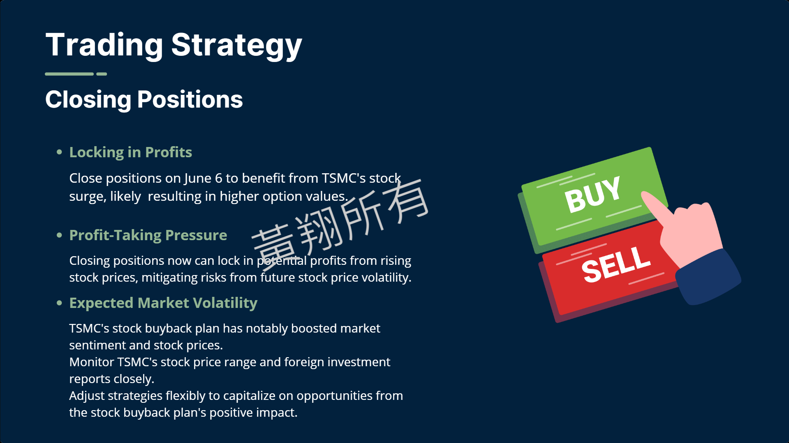

個人專案【澳洲癌症發展研究】
這是我在工業技術研究院【產業科技國際策略發展所】實習中的專案研究(一)。
● 工研院 【產科國際所】 身為台灣的智庫，我們負責：
(1) Technology Scouting 前瞻科技掃描
(2) Ecosystem Networking 創新生態網絡
(3) Capability Boosting 提升科研能量
(4) Strategic Partnering 連結策略夥伴
● 本人負責研究之細節：
1. 進行澳洲癌症技術背景資料的盤查(國家排名/數據/靜態/動態分析)
2. Top-down 角度，去盤查澳洲/台灣之國家政策方向，尋找研究突破口
3. 盤查澳洲/台灣內資金來源、注資情況、資金分布狀況
4. 盤查澳洲/台灣內研究量能(研究中心、實驗室、領導學者...)
5. 盤查澳洲/台灣相關研究/產業之情形(新創、技轉、RD、產業)
6. 根據盤查資料，收斂出重要領域，進行gap分析(交叉分析/合作機會)
協同專案【金融衍生品交易專案】



這是我在碩士課程【衍生性金融商品】中的期末報告，本門課我最終獲得94分。
這門課教授選擇權、期貨等衍生工具的基礎理論以及如何進行投資與避險。
通過這門課，我學會評估市場風險和機會，制定有效的投資策略，並使用金融衍生工具進行操作。
本堂課不僅教導理論知識，還深入介紹在台灣的實務操作，這些經驗極大地提升了我的交易技巧和市場敏銳度。
● 這份報告是我以模擬金進行衍生性金融商品交易的交易報告，架構是以基本面分析作為交易操作的依據：
由於我屬於風險趨避型交易者，所以主要進行買入買賣權的操作，而不會進行賣出的操作，以便更好的控制風險。
我選擇台灣指數選擇權作為主要交易標的，通過分析市場趨勢和經濟數據，決定交易的時機和方向。
報告詳細記錄了每一筆交易，包括交易標的、買賣方向、成交價格及時間。
最終，我從初始資本300,000元增加到最終資產市值391,250元。
在交易期間實現了30.42%的累計收益率。
協同專案【ESG與責任投資】
這是我在碩士課程【ESG與永續責任投資】中的期末報告，本門課我最終獲得97分
這門課強調ESG因素對企業運營和投資決策的重要性。
課程不僅提供了理論知識，還結合了實際案例，讓我能更深入了解如何在投資過程中考量永續發展。
研究報告著重於遠東集團的綠建築項目，展示其在ESG方面的努力和成就。
首先確立研究框架，從介紹遠東集團及其建築項目開始，再深入分析TPARK綠建築的認證與實踐。
● 報告的邏輯架構分為幾個主要部分：
1. 首先是引言和背景介紹。
2. 詳細探討TPARK項目的綠建築認證標準(如EEWH和LEED的比較)。
3. 探討可持續性貸款的特點及其對企業財務和非財務動機的影響。
4. 最後總結市場反應及TPKE綠建築在吸引國際企業如Google方面的成功。
個人專案【高評價電影分析】
這是我在碩士課程【大數據分析與管理專題研討】中的期末專案，本門課我最終獲得93分
這門課程結合問題邏輯思考、演算法數據分析、資料講故事，融合資訊技能與企業管理理論。
課程內容來自授課教師多年的企業輔導和產學合作經驗，且教師同時也是我的指導教授。
專案目標為分析哪些類型電影容易得到高評分，找到驅動消費者的因素，供片商投資參考。
● 分析流程：
(1) 資料來源：IMDb電影資料數據庫
(2) 資料處理：使用Python進行數據清洗、空缺值處理
(3) 視覺化統計分析：使用Power BI進行資料視覺化分析
(4) 模型分析：使用SPSS CLEMENTINE 12.0 進行決策樹分析
● 專案細節：
1. 將row data中對分析不必要的columns刪除
2. 針對空缺值進行整列刪除(由於無法透過合理方式進行填補)
3. 設定「高評價評分」閥值(利用平均值、中位數做選擇依據)
4. 利用Power BI分析最多用戶、電影類型評分統計排名
5. 利用決策樹分析影響因素
● 導致高評分因素：
1. 喜劇、戲劇、動作類電影
2. 評論數多的電影
3. 評分數多的電影
4. 電影長度越長
5. 影評人意見對評分高低無關
6. 電影總投票數對評分高低有關
● Insight：
(1) 群眾效應的重要性
(2) 用戶生成內容的影響力
(3) 口碑行銷策略
(4) 影評人影響力下降
(5) 社交證明效應
個人專案【半導體產業市場分析】
這是我在碩士課程【投資銀行專題】中的期末報告，本門課我最終獲得95分
這門課請來了業界講師來上課。
內容包括：證券自營商業務、統一投信、證券分析、公募私募、創投事業、產業分析、結構型商品等等。
這份研究報告旨在給商科學生的產業概況分析，希望能幫助非理工學生更好的入門半導體產業。
● 報告架構：
1. 半導體：介紹「性質」上的半導體、重要材料以及重要概念如「能隙」
2. 記憶體半導體：介紹揮發性/非揮發性、優勢，以及各自領導廠商、重點企業
3. 非記憶體半導體：介紹CPU、AP、MCU、產業特性、重點企業
4. 半導體產業鏈：無晶圓工廠、IC設計、晶圓代工；台灣產業現況
5. 前端製程：晶圓製造、微影製程、沉積/蝕刻製程、佈線/測試介紹
6. 後端製程：封裝製程、測試製程介紹；技術介紹
7. 台積電2024展望：現況分析、競爭優勢、財務分析